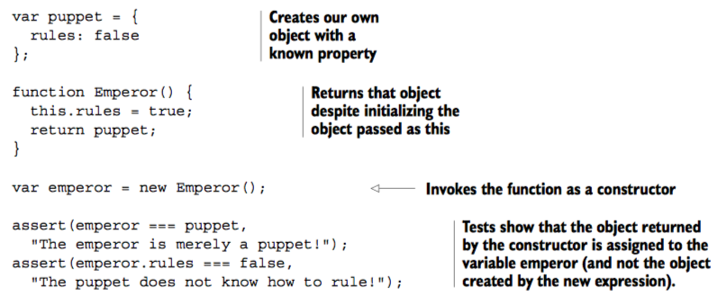

Ejemplo extraido del Libro Secrets_of_the_JavaScript_Ninja_Second.pdf - CHAPTER 4.2.3
- Invocation as a constructor
- If the constructor returns an object, that object is returned as the value of the whole new expression,
and the newly constructed object passed as this to the constructor is discarded.
- If, however, a nonobject is returned from the constructor, the returned value is ignored, and the newly
created object is returned.
- 